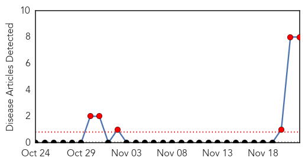
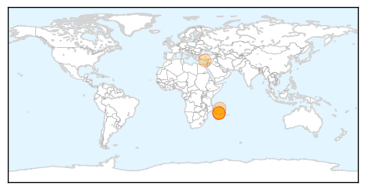
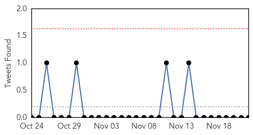
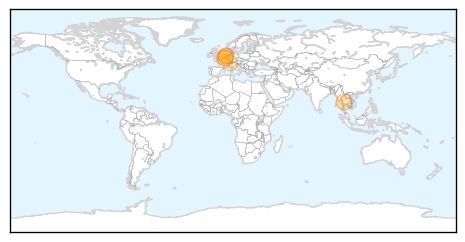

Bubonic Plague
30-Day Web Trend
6 alerts, 0 warnings

30-Day Twitter Trend
0 alerts, 0 warnings

Article Locations
Article Confidences

Top Articles:
- 0.998
- Madagascar plague kills 40 since August
- 0.993
- Plague – Madagascar
- 0.992
- Farsnews
- 0.990
- Bubonic plague kills 40 in Madagascar
- 0.983
- Plague Epidemic Strikes in Madagascar As Black Death Kills 40 People
- 0.981
- Toll rises to 40 as plague spreads in Madagascar
- 0.889
- Bubonic Plague Kills 40 in Madagascar
- 0.617
- Red Cross Launches 'Black Death' Campaign
Top Tweets:
-
No tweets found for Nov 22, 2014
Influenza
30-Day Web Trend
3 alerts, 0 warnings

30-Day Twitter Trend
0 alerts, 0 warnings

Article Locations
Article Confidences

Top Articles:
- 0.995
- Get shot: flu season is here
- 0.989
- How to beat influenza
- 0.819
- Bird Flu Spreads in Dutch Poultry
- 0.780
- Dutch Cull Ducks amid Bird Flu Fears in Poultry Heartland — Naharnet
- 0.768
- Bird flu hits third poultry farm in Netherlands
- 0.742
- Switzerland bans Dutch poultry imports
- 0.736
- Bird flu sees Swiss ban UK, Dutch poultry
Top Tweets:
-
No tweets found for Nov 22, 2014